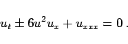
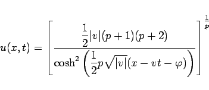
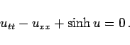
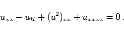
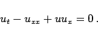
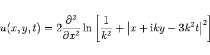

Inhalt Index DeskTop Bronstein

 Differentialgleichungen Partielle Differentialgleichungen Nichtlineare partielle Differentialgleichungen, Solitonen
Differentialgleichungen Partielle Differentialgleichungen Nichtlineare partielle Differentialgleichungen, Solitonen


|  | (9.151) |
Die noch allgemeinere Gleichung
| ut+upux+uxxx=0 | (9.152) |
|  | (9.153) |
|  | (9.154) |
|  | (9.155) |
Sie tritt bei der Beschreibung nichtlinearer elektrischer Netzwerke als Kontinuumsnäherung der Ladungs-Spannungs-Beziehung auf.
 |
(9.156) |
|  | (9.157) |
Sie tritt bei der modellmäßigen Beschreibung der Turbulenz auf. Mit der HOPF-COLE-Transformation wird sie in die Diffusionsgleichung, also eine lineare Differentialgleichung, überführt.
Die Gleichung
|  | (9.158b) |
zur Lösung. Die Gleichung (9.158a) ist ein Beispiel für Solitonengleichungen mit einer größeren Zahl unabhängiger Variabler, z.B. zweier Ortsvariabler.